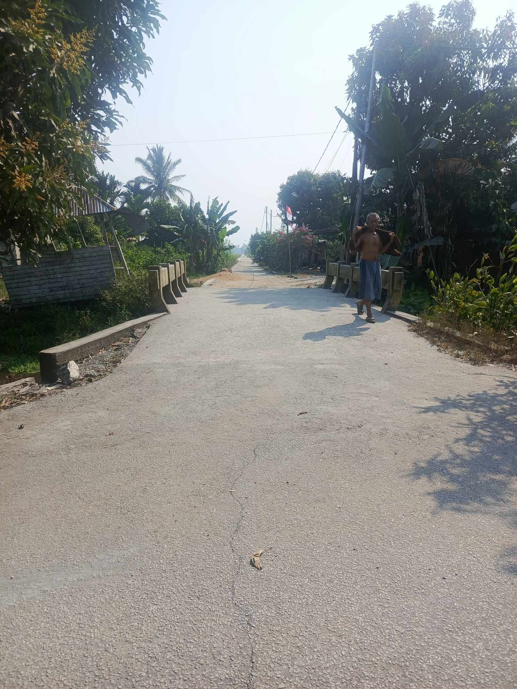

Sejarah & Letak Geografis
Desa Sepadu merupakan salah satu desa di Kecamatan Semparuk, Kabupaten Sambas, Kalimantan Barat. Mayoritas penduduknya bekerja sebagai petani dan pekebun. Desa ini memiliki suasana pedesaan yang tenang dan jauh dari kebisingan kota.

Visi dan Misi
Visi: Terwujudnya Desa Sepadu yang maju, mandiri, agamis, dan berwawasan lingkungan.
Misi: Mengembangkan sektor pertanian, memperbaiki infrastruktur desa, serta meningkatkan kesejahteraan dan gotong royong warga.